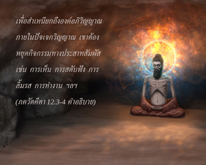

แต่พวกที่บูชาอย่างจริงจังกับสิ่งที่ไม่ปรากฏซึ่งอยู่เหนือความเข้าใจของประสาทสัมผัส แผ่กระจายไปทั่ว ไม่สามารถมองเห็นได้ ไม่มีการเปลี่ยนแปลง มั่นคง และไม่เคลื่อนที่ ซึ่งเป็นแนวคิดอันไร้รูปลักษณ์แห่งสัจธรรมด้วยการควบคุมประสาทสัมผัส และปฏิบัติเสมอภาคกับทุกๆคน บุคคลเช่นนี้ปฏิบัติเพื่อประโยชน์สุขของมวลชีวิต ในที่สุดจะบรรลุถึงข้า

พวกที่ไม่บูชาองค์ภควานฺ กฺฤษฺณโดยตรง แต่พยายามบรรลุถึงเป้าหมายเดียวกันด้วยวิถีทางอ้อม ในที่สุดจะบรรลุถึงเป้าหมายเช่นเดียวกัน คือ ศฺรีกฺฤษฺณ “หลังจากหลายต่อหลายชาติ มนุษย์ผู้มีปัญญาจะแสวงหาที่พึ่งในข้า รู้แจ้งว่า วาสุเทว คือ ทุกสิ่งทุกอย่าง” เมื่อคนนั้นมีความรู้อย่างสมบูรณ์หลังจากหลายต่อหลายชาติ เขาจะศิโรราบต่อองค์ศฺรีกฺฤษฺณ หากเข้าหาองค์ภควานฺด้วยวิธีที่กล่าวไว้ในโศลกนี้ เขาต้องควบคุมประสาทสัมผัส รับใช้ทุกๆ คน และปฏิบัติเพื่อประโยชน์สุขของมวลชีวิต สรุปแล้วว่า ต้องเข้าพบองค์กฺฤษฺณไม่เช่นนั้นจะไม่รู้แจ้งอย่างสมบูรณ์ ส่วนใหญ่จะปฏิบัติบำเพ็ญเพียรกันอย่างมาก ก่อนที่จะศิโรราบต่อพระองค์โดยสมบูรณ์
เพื่อสำเหนียกถึงองค์อภิวิญญาณภายในปัจเจกวิญญาณ เขาต้องหยุดกิจกรรมทางประสาทสัมผัส เช่น การเห็น การสดับฟัง การลิ้มรส การทำงาน ฯลฯ จากนั้นจึงมาถึงจุดที่เข้าใจว่า องค์อภิวิญญาณทรงปรากฏอยู่ทุกหนทุกแห่ง เมื่อรู้แจ้งเช่นนี้เขาจะไม่อิจฉาชีวิตใด จะเห็นมนุษย์ และสัตว์เท่าเทียมกัน เพราะเห็นแต่ดวงวิญญาณเท่านั้น เขาไม่เห็นที่สิ่งปกคลุมภายนอก สำหรับบุคคลธรรมดาทั่วไป วิธีแห่งการรู้แจ้งที่ไร้รูปลักษณ์เช่นนี้ยากลำบากมาก